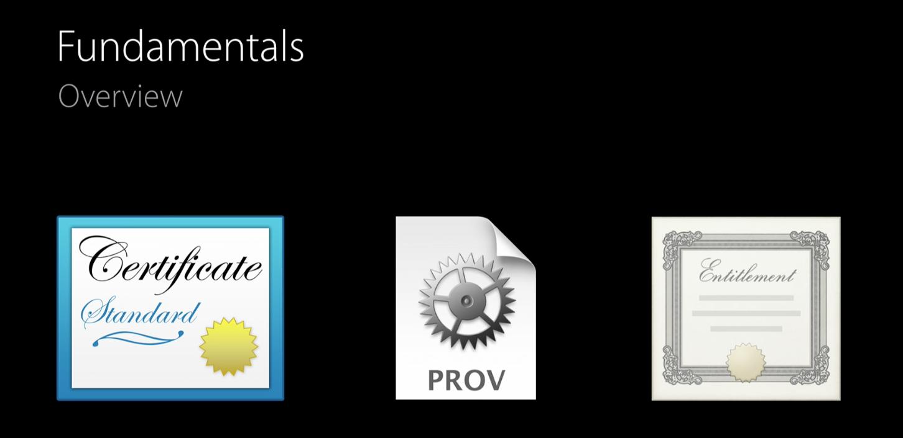

To understand the fundamentals of App Signing we need to understand 3 important things.

you always had a choice of automatic vs. customized provisioning. It’s just that the implementation of those choices was confusing and often did the wrong thing. And we never choose Automatic since it was a blackbox to deal with.
Automatic Code Signing uses a new Xcode managed profiles. By selecting Automatic Code Signing when creating the project, Xcode will automatically create and manage profiles for the developer. Xcode creates dedicated profile that is separate from any that you have already created. This is an improvisation of the “Fix Issue” button but is segregated so it won’t mess up your existing managed profiles. Automatic Code Signing looks great and it will probable be used by a ton of developers.
Customized Code Signing is how we have been managing our profiles and apps for years and it allows us the most control over how our apps are code signed. large teams like us with multiple apps in the same workspace require more fine-grained control over the code signing in their apps, and customized code signing helps those teams.
Both the cases instead of being buried in the Build Settings, Code Signing is now displayed front and center in the General tab. When “Automatically manage signing” is unchecked we can specifically select the provisioning profile we wish to use for each Configuration.Now this in itself is nothing new, we have always been able to do this in the Build Settings tab. The best part is with the filtered list of profiles that Xcode 8 displays here.The drop down list of profiles now groups the Eligible profiles above the Ineligible profiles. Meaning that profiles that match the bundle identifier absolutely or with a wild card will be displayed above any profiles that don’t match at all.
if you select a profile that doesn’t match the bundle identifier you now get error messages that will tell you exactly what the problem is, this is a massive improvement over what we had in the past. No longer is Xcode hiding the details from us. No longer should we have to try to figure out what might be wrong. Xcode 8 will tell you exactly what is wrong, misaligned, expired, or missing.
This report completely lifts the covers off of the “API” that Xcode uses to talk to the developer portal, which was always happening in previous versions as well but under the hood. Now when Xcode 8 handles code signing on your behalf, you can see exactly what checks are being performed, and what Xcode 8 is doing in order to fix the problems it identifies.
Last but best thing, a new Build Configuration setting, PROVISIONING_PROFILE_SPECIFIER. In the past you could specify the PROVISIONING_PROFILE by name and Xcode would instead reference the UUID of the profile in the project file like so: PROVISIONING_PROFILE = “9b7bca71-29ac-44de-a96d-131d06b46501”. If the profile with that exact UUID ever went missing, Xcode had no way to reconcile this on its own. You would have to go into Build Settings and find the profile name in your list again in order for Xcode to get the new UUID. PROVISIONING_PROFILE_SPECIFIER allows you to specify the provisioning profile name, but now Xcode 8 will save the following in your project file: PROVISIONING_PROFILE_SPECIFIER = “UI2I5K7L3SF/TestProjectProfile".—a combination of the Team ID and profile name (as it is named in the Developer Portal, not necessarily the actual filename). This way Xcode will always use the latest profile of that name regardless of UUID. Xcode will no longer use an old, out-of-date profile after you have updated it.
The best practice that Apple mentioned. Application distribution is a two-step process: compilation and code signing. Your app should first be compiled into an XCArchive and then exported to an IPA for distribution. Because of this, we do not need to have the exact release certificates and profiles set in your Release configuration. As long as the app compiles with the correct release flags, optimizations, etc., it can be signed with an AdHoc or even a Development profile. You just need to use the correct App Store or Enterprise profile when you export the IPA or submit to the App Store. This can help developers who don’t have access to the release credentials and certificates from seeing unnecessary errors that they cannot do anything about.